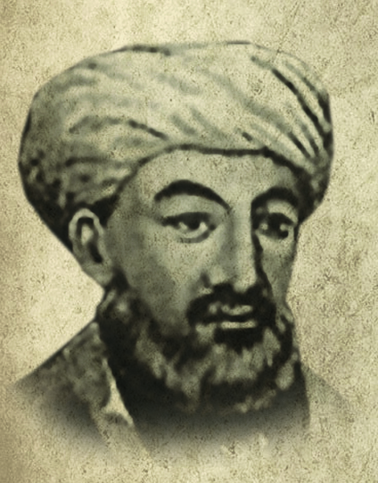
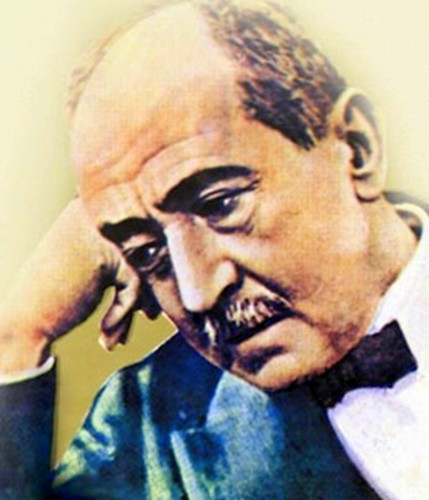
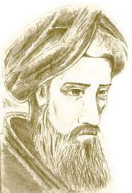
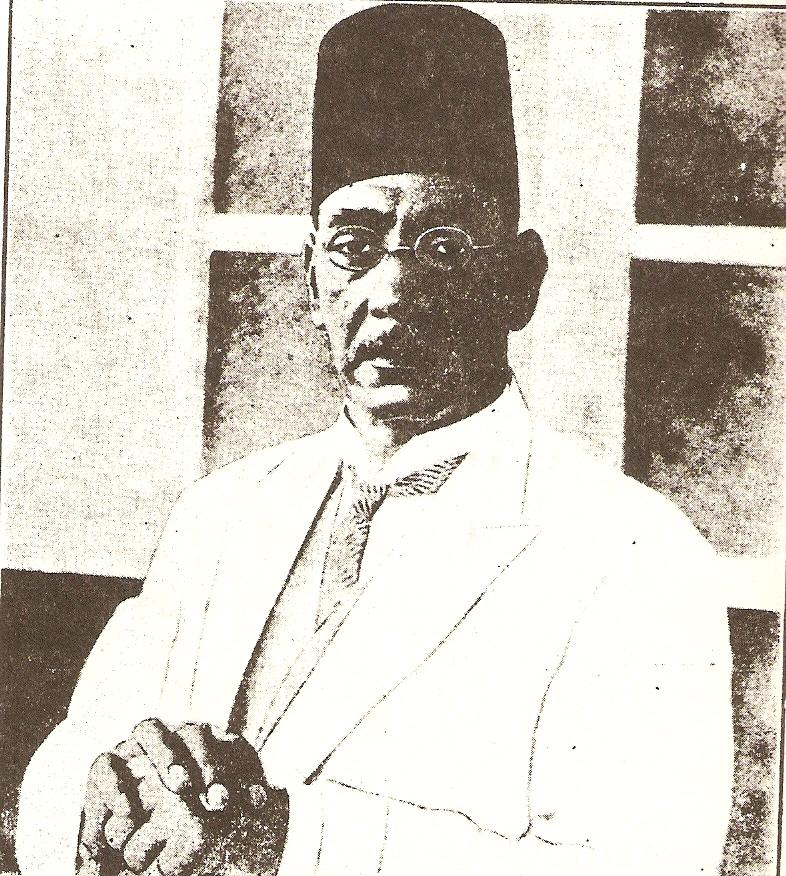
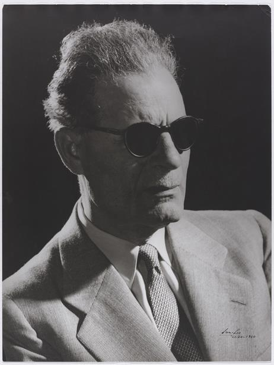
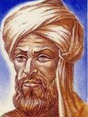
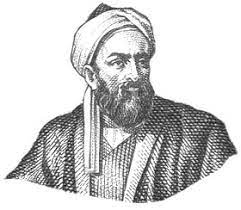

ابو الاسود الدؤلي الملقب ب(ملك النحو) بكونه هو اول من وضع قواعد النحو في اللغه العربيه
Abu Al-Aswad Al-Du'ali, nicknamed (the king of grammar), being the first to establish the rules of grammar in the Arabic language

أحمد شوقي علي أحمد شوقي بك (16 أكتوبر 1868 - 14 أكتوبر 1932)، كاتب وشاعر مصري يعد أعظم شعراء العربية في العصور الحديثة، يلقب بـ «أمير الشعراء».
Ahmed Shawky Ali Ahmed Shawky Bey (October 16, 1868 - October 14, 1932), an Egyptian writer and poet, is considered the greatest Arab poet of modern times. He is nicknamed "Prince of Poets".

وهو الخليل بن أحمد بن عبد الرحمن، أبو عبد الرحمن الفراهيدي الأزدي، ويُقال أنه الفرهودي الأزدي اليحمدي، وأن نسبه يعود إلى فرهود بن شبابة بن مالك بن فهم، وهو إمام بارز في علم النحو، ويُعد أول من استنبط علم العروض
He is Al-Khalil bin Ahmed bin Abd al-Rahman, Abu Abd al-Rahman al-Farahidi al-Azdi, and it is said that he is al-Farhudi al-Azdi al-Yahmadi, and that his lineage goes back to Farhood bin Shababah bin Malik bin Fahm.

المهندس حافظ ابراهيم هو واحد من اهم الشعراء المصريين واشهر شعراء العرب، والذي اشتهر بعدة القاب منها شاعر النيل وشاعر الشعب وكان ايضا يشتهر بالكرم والشهامه بعيدا عن الشعر
Engineer Hafez Ibrahim is one of the most important Egyptian poets and the most famous of the Arab poets, who was famous for several titles, including the poet of the Nile and the poet of the people, and we will mention some important stages in the life of Hafez Ibrahim in the next few lines
.jpeg)
ديب وروائي مصري كتب عشرات الروايات والقصص، وأكثر أديب عربي حولت رواياته إلى أفلام سينمائية وتليفزيونية. تصنف رواياته ضمن الأدب الواقعي
Dib and an Egyptian novelist wrote dozens of novels and stories, and most of the Arab writers turned his novels into cinematic and television films. His novels are classified as realistic literature

يعتبر طه حسين عميد الأدب العربي الحديث ورائد التنوير في مصر. وُلِد في عام 1889 في محافظة المنيا بصعيد مصر، وفقد بصره عن عمر ثلاث سنوات نتيجة لإهمال حالة عينه. تعلم القراءة والكتابة في الكُتَّاب بعدها درس في جامعة الأزهر قبل أن يتابع دراسته في جامعة القاهرة..
Taha Hussein is considered the dean of modern Arabic literature and a pioneer of enlightenment in Egypt.

هو جابر بن حيّان الكوفي، وهو عالم في الفلسفة، والطبيعة، والأدب، والفلك، والكيمياء، وينتمي لأصول يمنيّة عربيّة أزديّة،[١] وبعد تأسيس الحُكم العباسي عاش في مدينة بغداد، واستمرّت فترة حياته تقريباً من عام 721م إلى عام 815م،
He is Jaber bin Hayyan al-Kufi, and he is a scholar of philosophy, nature, literature, astronomy, and chemistry, and he belongs to Yemeni Arab Azdi origins, [1] After the establishment of the Abbasid rule, he lived in the city of Baghdad, and his life span lasted approximately from the year 721 AD to the year 815 AD,

ولد العالم محمد بن موسى الخوارزمي (Muḥammad ibn Mūsā al-Khwārizmī) عام 780 م في العراق في العاصمة بغداد،[١] ويُشير البعض الآخر إلى أن اسم الخوارزمي يشير إلى أنه وُلد في بلدة خوارزم، الواقعة جنوب بحر آرال في آسيا الوسطى، ثم انتقل إلى العاصمة بغداد بعدها.[١]
Alim Məhəmməd ibn Musa əl-Xorizmi miladi 780-ci ildə İraqın paytaxtı Bağdadda anadan olmuşdur[1] və başqaları göstərir ki, əl-Xarəzmi adı onun Aral çayının cənubunda yerləşən Xorazm şəhərində doğulduğunu göstərir. Orta Asiyada dəniz, daha sonra paytaxt Bağdada köçdü.[1]

يخبرنا التاريخ عن مواقف وشخصيات تركت بصمةً لها بين سطور العلم والأدب والفلسفة والفلك والتأريخ والترحال والطب والفيزياء –ومن النادر اجتماع هذه العلوم في إنسان- إلا أن العالم الموسوعي أبو ريحان البيروني قد جمعها كلها.
History told us about situations and personalities that left their imprint on them between the lines of science, literature, philosophy, astronomy, history, travel, medicine and physics - and it is rare for these sciences to be combined in a person - but the encyclopedic scholar Abu Rayhan Al-Biruni collected them all.
 الرئيسيه
Home
المزيدعن العربية
More about Arabic
معلومات عربيه تاريخيه
Arabic history info
فريق العمل
Team
تواصل معنا
Contact Us
الرئيسيه
Home
المزيدعن العربية
More about Arabic
معلومات عربيه تاريخيه
Arabic history info
فريق العمل
Team
تواصل معنا
Contact Us